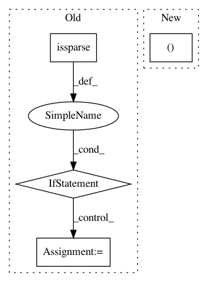

135bed105e13d5ceaf97207e20c5b2e3b6c19ef6,scanpy/preprocessing/_utils.py,,_get_mean_var,#Any#,8
Before Change
// - using X.multiply is slower
if not STANDARD_SCALER_FIXED:
mean = X.mean(axis=0)
if issparse(X):
mean_sq = X.multiply(X).mean(axis=0)
mean = mean.A1
mean_sq = mean_sq.A1
else:
mean_sq = np.multiply(X, X).mean(axis=0)
// enforece R convention (unbiased estimator) for variance
var = (mean_sq - mean ** 2) * (X.shape[0] / (X.shape[0] - 1))
else:
from sklearn.preprocessing import StandardScaler
After Change
from sklearn.preprocessing import StandardScaler
scaler = StandardScaler(with_mean=False).partial_fit(X)
mean, var = scaler.mean_, scaler.var_
else:
mean = X.mean(axis=0, dtype=np.float64)
var = X.var(axis=0, dtype=np.float64)
In pattern: SUPERPATTERN
Frequency: 3
Non-data size: 4
Instances
Project Name: theislab/scanpy
Commit Name: 135bed105e13d5ceaf97207e20c5b2e3b6c19ef6
Time: 2019-10-08
Author: ivirshup@gmail.com
File Name: scanpy/preprocessing/_utils.py
Class Name:
Method Name: _get_mean_var
Project Name: ClimbsRocks/auto_ml
Commit Name: 019f0c822cd8f2833d3b25855f2df99cd5a465a4
Time: 2017-08-17
Author: ClimbsBytes@gmail.com
File Name: auto_ml/utils_model_training.py
Class Name: FinalModelATC
Method Name: fit
Project Name: theislab/scanpy
Commit Name: c5c2d65ebd3ee375fa9855c326d88646ee403aa7
Time: 2020-12-03
Author: fidel.ramirez@gmail.com
File Name: scanpy/get.py
Class Name:
Method Name: obs_df